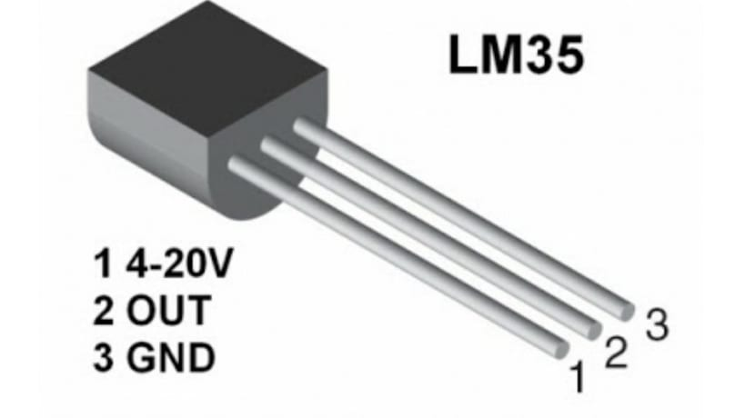

Ինչպես միացնել Lm35 սենսորը Arduino-ին
LM35 ջերմության սենսորը հնարավոր է կիրառել շատ պարզ նախագծերում։ Դիտարկենք օրինակ ջերմության սենսորի կիրառումը, որը համակարգչի կամ LCD մօնիտորի վրա կատարածի ջերմաստիճանը։
LM35 սենսորի նկարագրություն
- սնուցում՝ 2,7-5,5վոլտ
- ջերմաստիճանի միջակայք՝ 10oC-125oC
- հնարավոր սխալ՝ 2աստիճանը
- անհրաժեշտ հոսանք՝ մկԱ
LM35-ի փոխարեն հնարավոր է կիրառել ցանկացած սենսոր, որը նախատեսված է ջերմաստիճանի ստուգման համար, օրինակ` TMP35, LM35, TMP, LM335: Սենսորի տեսքը նման է ռեզիստորի, ուստի հեշտ է այն շփոթել, ուստի անհրաժեշտ է ուշադիր կարդալ ռադիոէլեմենտի վրա կատարած նշումները․
Անհրաժեշտ էլեմենտներ
- Arduino Uno/ Arduino Nano/ Arduino Mega 2560
- breadboard
- LM35 սենսոր
- լեդ լույս և ռեզիստոր՝ 220օմ
- լարեր «պապա-պապա»
LM35 սենսորը անալոգային է, հետևաբր որպես ելքային արժեք ստանում ենք 0 կամ 1, հետևաբար սենսորը պետք է
միացնենք
Arduino տպասալի A0-A5 պիներին։
Միացումները կատարելուց հետո պետք է ներբեռնել սկետչը։
int temp; // "temp" փոփոխական
void setup() {
pinMode(A0, INPUT); // LM35 սենսորը միացնում ենք A0 անալոգային մուտքին
Serial.begin(9600);
}
void loop() {
temp = digitalRead(A0); // փոփոխականի արժեքը գտնվում է 0 - 1023 միջակայքում
Serial.println(temp); // արժեքը արտածում ենք էկրանին
delay(1000); // սպասում
}
Կոդի մեկնաբանություն
- Առաջին տողում սահմանում ենք temp փոփոխականը
- int տվյալի տիպը ցույց է տալիս, որը temp-ի արժեքը միայն ամբողջ թիվ կարող է լինել
LM35 սենսորի տրամաչափում
Անալոգային սենսորի տրամաչափումը անհրաժեշտ է, որպեսսզի արդյունքը ստանանքoC-ով, ինչպես դա տրված
է
միջավայրի խոնավությունն ու ջերմաստիճանը որոշող DHT11 թվային սենսորի վրա։
LM35 սենսորի տրամաչափումը որոշելու համար անհրաժեշտ է ծրագրում փոփոխություն կատարել։
int temp; // "temp" փոփոխական
float grad; // "grad" փոփոխական
void setup() {
pinMode(A0, INPUT);
Serial.begin(9600);
}
void loop() {
temp = analogRead(A0);
grad = ( temp/1023.0 )*5.0*1000/10;
Serial.println(grad); //էկրանին արտածում ենք ջերմությունը
delay(100); // ставим небольшую задержку
}
Կոդի մեկնաբանություն
- float տվյալի տիպը նաղատեսված է լողացող կետով արժեքներ պահպանելու համար։
- grad=(temp/1023.0)*5.0*1000/10` ճշգրտությամբ տրամաչափում է սենսորի հաղորդած տվյալները։